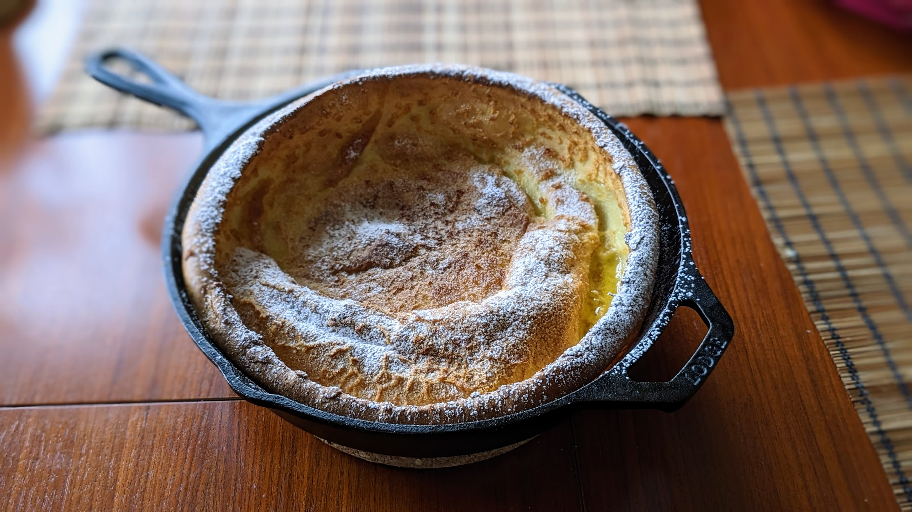

Dutch baby

Pour une personne pour un plat de brunch, deux ou trois pour un dessert :
- 3 œufs
- 60g de farine
- 120g de lait (ou de lait végétal)
- Une cuillère à soupe de sucre
- Une pincée de noix de muscade
- 60g de beurre
- Un peu de sucre glace
- Mettre une poêle en fonte dans le four et préchauffer à 220°C.
- Mixer ensemble les œufs, la farine, le lait, le sucre, et la muscade.
- Quand le four est chaud, mettre le beurre dans la poêle en fonte, et attendre qu'il soit totalement fondu.
- Puis, ajouter le mélange dans la poêle, et cuire une vingtaine de minutes, jusqu'à ce que ça ait pris de la hauteur et une jolie couleur.
- Éteindre le four et laisser la poêle dedans 5 minutes de plus.
- Saupoudrer de sucre glace, et déguster immédiatement, avec du sirop d'érable ou de la confiture.
Retour à la liste des recettes